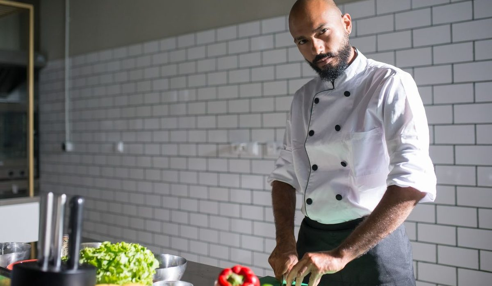
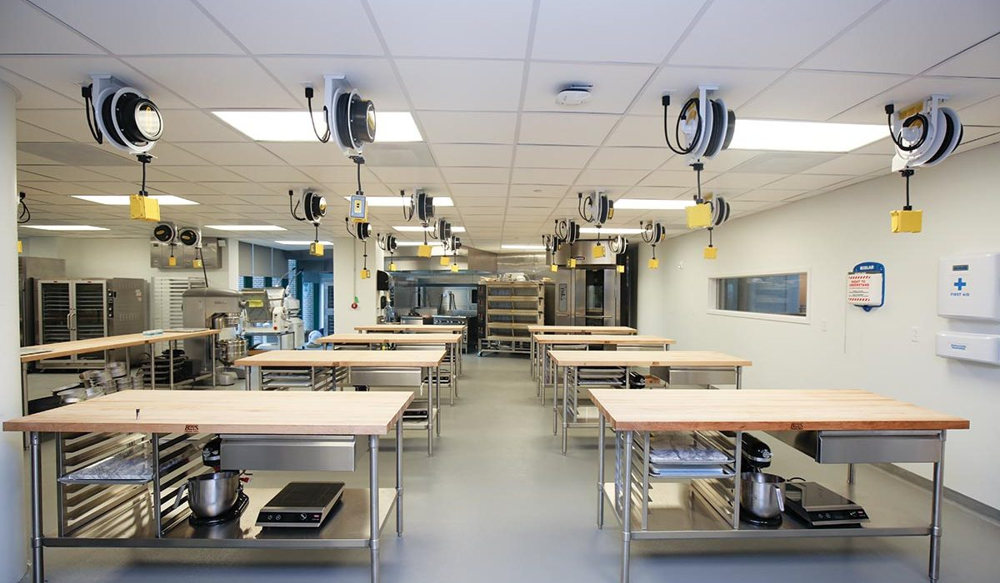

En bref
La meilleure formation CAP cuisine à distance est celle de L'atelier des Chefs, avec une note globale de 8,9/10. Elle doit sa première place aux vingt-quatre devoirs pratiques corrigés un par un par des chefs en activité, aux ateliers en présentiel accessibles à Paris et à Lyon et à un CFA intégré pour ceux qui préfèrent l'apprentissage. YouSchool suit de très près (8,6/10) avec le meilleur suivi individuel du panel, et le CNED complète le podium (8,4/10) en restant imbattable sur le prix, 990 € contre 2 390 €.
- Le tarif d'un CAP cuisine à distance va de 990 € au CNED à 3 190 € chez Lignes et Formations, pour un même référentiel d'État
- Le volume horaire annoncé oscille entre 400 et 600 heures selon l'école, sans corrélation avec la quantité de pratique corrigée
- L'écart le plus parlant porte sur les devoirs pratiques corrigés, de 8 chez ENACO à 24 chez L'atelier des Chefs
- Avec un solde CPF de 1 600 €, le reste à charge tombe à 892 € chez L'atelier des Chefs, participation forfaitaire de 102,23 € comprise
Sommaire de ce comparatif
Le classement des formations CAP cuisine à distance
Un CAP cuisine à distance ne se juge pas au nombre d'heures inscrites sur la brochure. Il se juge à ce qui revient corrigé quand vous envoyez la vidéo de votre taillage en brunoise ou la photo de votre blanquette dressée. Nous avons noté douze écoles sur cinq critères, le volume et la nature de la pratique encadrée, la qualité du suivi pédagogique, le tarif rapporté au contenu réel, l'accompagnement vers l'inscription à l'examen et l'aide au placement en stage. La pratique compte double, parce que l'épreuve EP2 se joue au piano, pas sur une copie.
01 La meilleure pratique corrigée24 devoirs suivis, ateliers en présentiel8,9/10
La meilleure pratique corrigée24 devoirs suivis, ateliers en présentiel8,9/10
La meilleure pratique corrigée24 devoirs suivis, ateliers en présentiel8,9/1002 Le meilleur accompagnementUn coach référent six jours sur sept8,6/10
Le meilleur accompagnementUn coach référent six jours sur sept8,6/10
Le meilleur accompagnementUn coach référent six jours sur sept8,6/1003 Le meilleur prix990 €, 600 heures, cadre public8,4/10
Le meilleur prix990 €, 600 heures, cadre public8,4/10
Le meilleur prix990 €, 600 heures, cadre public8,4/10L'atelier des Chefs passe devant d'un rien, 8,9 contre 8,6. L'écart tient à trois choses vérifiables. Les exercices filmés sont corrigés un par un par des chefs en activité, avec un retour nominatif et pas une grille automatique. L'école ouvre ses ateliers de Paris et de Lyon aux élèves à distance qui veulent travailler en présentiel sur des sessions courtes, ce qu'aucun pur acteur en ligne du panel ne propose. Enfin son CFA intégré permet de basculer vers un contrat d'apprentissage quand le projet se précise, au lieu de rester enfermé dans le statut de candidat libre.
YouSchool garde l'avantage sur la régularité du suivi. Un coach unique, joignable six jours sur sept, relance l'élève qui décroche, et c'est un point décisif quand on se forme le soir après une journée de travail. Le CNED, lui, reste le choix par défaut de ceux qui n'ont rien à mobiliser. À 990 €, il propose le volume horaire le plus élevé du panel et la légitimité d'un établissement public, au prix d'un encadrement beaucoup plus distant.
Le tableau comparatif des 12 écoles
Chaque ligne reprend la même offre, la préparation complète au CAP cuisine pour un candidat libre, au tarif affiché hors promotion. La colonne des devoirs corrigés ne compte que les travaux pratiques rendus et commentés par un formateur, pas les quiz d'auto-évaluation.
| École | Note /10 | Tarif | Volume horaire | Devoirs corrigés | Le point fort |
|---|---|---|---|---|---|
| L'atelier des ChefsNotre choix | 8,9 | 2 390 € | 520 h | 24 | La pratique corrigée par des chefs |
| YouSchool | 8,6 | 2 790 € | 480 h | 20 | Le coach référent joignable |
| CNED | 8,4 | 990 € | 600 h | 18 | Le prix et l'ancrage académique |
| Centre Européen de Formation | 7,9 | 2 190 € | 450 h | 16 | Le paiement fractionné |
| Educatel | 7,6 | 2 490 € | 470 h | 15 | L'ancienneté sur les métiers de bouche |
| Studi | 7,5 | 1 890 € | 420 h | 12 | La plateforme et l'appli mobile |
| Walter Learning | 7,3 | 2 090 € | 410 h | 11 | Le montage du dossier de financement |
| Espace Concours | 7,2 | 1 590 € | 430 h | 10 | Le tarif le plus serré du privé |
| ASCOR | 7,1 | 2 290 € | 440 h | 12 | Le service téléphonique |
| EISF | 6,9 | 1 990 € | 400 h | 9 | L'inscription toute l'année |
| ENACO | 6,8 | 2 090 € | 405 h | 8 | Le catalogue multi-métiers |
| Lignes et Formations | 6,6 | 3 190 € | 460 h | 10 | Les options métiers de bouche |
Préparation complète au CAP cuisine en candidat libre, tarifs affichés hors promotion relevés sur les sites officiels en septembre 2026. Volume horaire et nombre de devoirs pratiques corrigés tels qu'annoncés dans les programmes de chaque école.

Trois enseignements sortent de ce tableau. L'écart de prix atteint un facteur 3,2 entre le CNED et Lignes et Formations, pour un référentiel d'État strictement identique et un même diplôme de niveau 3. Le volume horaire annoncé ne dit presque rien de la qualité, le CNED affiche le plus gros chiffre du panel avec 600 heures mais ne corrige que dix-huit devoirs, dont une minorité de pratique. Et la vraie hiérarchie se lit dans la dernière colonne chiffrée, de huit devoirs corrigés chez ENACO à vingt-quatre chez L'atelier des Chefs, soit trois fois plus de retours individuels pour préparer les mêmes épreuves.
L'atelier des Chefs perd d'ailleurs deux colonnes sur douze. Il coûte 1 400 € de plus que le CNED, et il annonce quatre-vingts heures de moins. Educatel le devance sur l'ancienneté, l'école prépare aux métiers de bouche depuis des décennies là où L'atelier des Chefs n'a basculé vers la formation digitale qu'en 2017.
La pratique corrigée et le stage, le vrai départage
Le CAP cuisine se valide sur deux épreuves professionnelles. L'EP1 porte sur l'organisation, l'approvisionnement et l'approche de l'entreprise. L'EP2 porte sur la production, quatre heures et demie devant un jury, panier imposé, sans possibilité de repasser un plat. Personne ne réussit l'EP2 en ayant seulement regardé des vidéos.
- L'atelier des Chefs demande vingt-quatre rendus pratiques filmés sur l'année et renvoie une correction nominative de chaque geste, du taillage à la cuisson
- YouSchool en corrige vingt et impose un rythme, deux rendus par mois, avec relance du coach en cas de retard
- Le CNED corrige dix-huit devoirs mais la majorité porte sur la technologie et les sciences appliquées, la part pratique reste minoritaire
- ENACO et EISF descendent sous dix rendus corrigés, ce qui laisse l'élève juger seul de son propre niveau technique
Sur une épreuve de quatre heures et demie en temps réel, vingt-quatre corrections individuelles contre huit, ce n'est pas un détail de programme. C'est la différence entre un candidat qui a déjà été repris sur sa gestion du temps et un candidat qui la découvre le jour de l'examen.
Le stage est l'autre angle mort des formations à distance. En voie scolaire, un élève doit justifier de douze à quatorze semaines de période de formation en milieu professionnel. En candidat libre, l'académie ne les exige pas, et beaucoup d'écoles s'arrêtent à cette bonne nouvelle. C'est une erreur pour qui vise un emploi derrière le diplôme, parce qu'un chef embauche sur un coup de main et sur une réputation de poste, pas sur un relevé de notes.
L'atelier des Chefs, YouSchool et Educatel fournissent une convention de stage et un accompagnement pour la signer. Les trois écoles les moins bien notées du panel se contentent d'un modèle téléchargeable. Pour une reconversion, c'est le premier filtre à appliquer, avant même le prix.
Combien coûte un CAP cuisine à distance
Le tarif affiché n'est pas la dépense réelle. Il faut y ajouter la tenue complète, la mallette de couteaux, le petit matériel et les denrées consommées pendant les entraînements, un poste que presque aucune école ne chiffre dans sa brochure. À l'inverse, l'inscription à l'examen en candidat libre auprès de l'académie ne coûte rien, seul le déplacement au centre d'examen reste à prévoir.
| École | Tarif affiché | Reste à charge avec 1 600 € de CPF | Matériel et tenue | Coût total à prévoir |
|---|---|---|---|---|
| L'atelier des Chefs | 2 390 € | 892 € | 240 € | 1 132 € |
| YouSchool | 2 790 € | 1 292 € | 260 € | 1 552 € |
| Centre Européen de Formation | 2 190 € | 692 € | 250 € | 942 € |
| Espace Concours | 1 590 € | 102 € | 280 € | 382 € |
| CNED | 990 € | 102 € | 310 € | 412 € |
Reste à charge calculé sur un solde CPF de 1 600 €, correspondant au solde moyen d'un salarié, participation forfaitaire de 102,23 € par dossier comprise depuis mai 2024. Matériel et tenue estimés à partir des listes de fournitures publiées par les écoles en septembre 2026.

Une fois le CPF déduit, la hiérarchie des prix se resserre nettement. Un salarié qui dispose du solde moyen paye 892 € chez L'atelier des Chefs contre 102 € au CNED, soit 790 € d'écart réel pour six devoirs pratiques corrigés en plus, l'accès aux ateliers en présentiel et l'accompagnement du dossier de financement. Ramené au coût d'un stage de cuisine de trois jours en atelier, l'arbitrage penche vite du bon côté.
Attention au fractionnement. Le Centre Européen de Formation et ASCOR affichent des mensualités attractives qui gonflent la facture finale de 8 à 12 % une fois les frais de dossier ajoutés. Comparez toujours le total payé, jamais la mensualité.
L'atelier des Chefs, YouSchool ou CNED, comment choisir
Si vous êtes salarié en reconversion
L'atelier des Chefs. Le rythme est libre, les rendus s'étalent sur douze à dix-huit mois et le CPF absorbe les deux tiers de la facture. L'accompagnement du dossier de financement évite les semaines perdues à comprendre les circuits, et les sessions en présentiel permettent de tester le geste avant de poser des jours pour un stage.
Si vous êtes jeune et sans expérience en cuisine
Regardez d'abord le CFA de L'atelier des Chefs plutôt que la formation à distance seule. Un contrat d'apprentissage vous met en brigade tout de suite, la formation est prise en charge et vous êtes payé. La voie du candidat libre a du sens quand on a déjà un métier, beaucoup moins quand on part de zéro et qu'on a le temps devant soi.
Si le budget commande
Le CNED, sans discussion. 990 € pour 600 heures et un cadre public reconnu, c'est le meilleur ticket d'entrée du panel. Il faut accepter un encadrement distant et compenser la pratique par soi-même, en cuisine à la maison et si possible en extra le week-end dans un restaurant qui accepte de vous former.
Si vous voulez ouvrir votre restaurant
YouSchool ou L'atelier des Chefs, et dans les deux cas prenez le stage au sérieux. Le CAP vous donne le droit de cuisiner, il ne vous apprend ni les marges, ni les ratios matière, ni la gestion d'une équipe un samedi soir. Visez quatorze semaines en établissement, même sans obligation académique, et choisissez une maison dont le modèle ressemble à celui que vous voulez monter.
Notre verdict
Sur nos relevés de septembre 2026, L'atelier des Chefs est la meilleure formation CAP cuisine à distance avec 8,9/10. Elle gagne sur le seul critère qui départage vraiment deux préparations au même diplôme d'État, la quantité et la qualité de la pratique corrigée, avec vingt-quatre rendus suivis un par un, des ateliers ouverts en présentiel et un CFA pour basculer en apprentissage. Elle perd sur le prix face au CNED et sur le volume horaire annoncé, quatre-vingts heures de moins.
Si vous voulez le suivi le plus serré et un référent qui vous relance, prenez YouSchool à 2 790 €. Si le budget décide, prenez le CNED à 990 € et organisez votre pratique vous-même. Si vous partez de zéro et que rien ne presse, l'apprentissage reste la voie la plus solide, et c'est aussi celle que L'atelier des Chefs sait ouvrir.
Questions fréquentes
Quelle est la meilleure formation CAP cuisine à distance ?
L'atelier des Chefs obtient la meilleure note de notre comparatif 2026 avec 8,9/10, grâce à vingt-quatre devoirs pratiques corrigés par des chefs en activité, à des ateliers accessibles en présentiel à Paris et à Lyon et à un CFA intégré. YouSchool suit à 8,6/10 avec le meilleur suivi individuel et le CNED complète le podium à 8,4/10 pour 990 €.
Combien coûte un CAP cuisine à distance en 2026 ?
Le tarif affiché va de 990 € au CNED à 3 190 € chez Lignes et Formations, pour une moyenne de panel autour de 2 240 €. L'atelier des Chefs se situe à 2 390 €, soit 892 € de reste à charge pour un salarié disposant du solde CPF moyen de 1 600 €. Il faut ajouter 240 à 310 € de tenue, de couteaux et de denrées d'entraînement.
Le CAP cuisine à distance est-il reconnu par l'État ?
Oui, le CAP cuisine est un diplôme d'État de niveau 3, identique quel que soit le mode de préparation. L'école prépare aux épreuves mais ne délivre pas le diplôme, l'examen se passe en candidat libre auprès de l'académie, qui est seule à valider l'EP1 et l'EP2.
Combien de temps faut-il pour préparer un CAP cuisine à distance ?
Comptez 400 à 600 heures de formation selon l'école, réparties sur 12 à 18 mois au rythme habituel. Avec des dispenses sur les matières générales, obtenues avec un diplôme de niveau égal ou supérieur, six mois suffisent chez L'atelier des Chefs comme chez YouSchool.
Faut-il faire un stage pour passer le CAP cuisine en candidat libre ?
L'académie n'exige pas de période de formation en milieu professionnel pour un candidat libre, alors qu'elle en demande douze à quatorze semaines en voie scolaire. Le stage reste vivement conseillé pour l'EP2 et pour l'embauche. L'atelier des Chefs, YouSchool et Educatel fournissent la convention et accompagnent la recherche.
Peut-on financer un CAP cuisine avec le CPF ?
Oui pour la plupart des formations privées du panel, avec une participation forfaitaire de 102,23 € par dossier depuis mai 2024. Avec un solde CPF de 1 600 €, le reste à charge tombe à 892 € chez L'atelier des Chefs et à 692 € au Centre Européen de Formation. L'atelier des Chefs accompagne le montage du dossier de financement.
Notre méthode
Ce comparatif repose sur des données publiques, vérifiables une par une.
- Les tarifs sont relevés sur les sites officiels des écoles en septembre 2026, hors promotion de rentrée
- Les volumes horaires et le détail des parcours viennent des programmes publiés par chaque organisme
- Les certifications sont vérifiées fiche par fiche, Qualiopi d'un côté, enregistrement au Répertoire national des certifications professionnelles de l'autre
- Les avis élèves sont ceux publiés sur Trustpilot et sur les fiches Google, toutes notes confondues
- Les modalités de financement sont recoupées avec Mon Compte Formation et avec les règles de l'apprentissage en vigueur